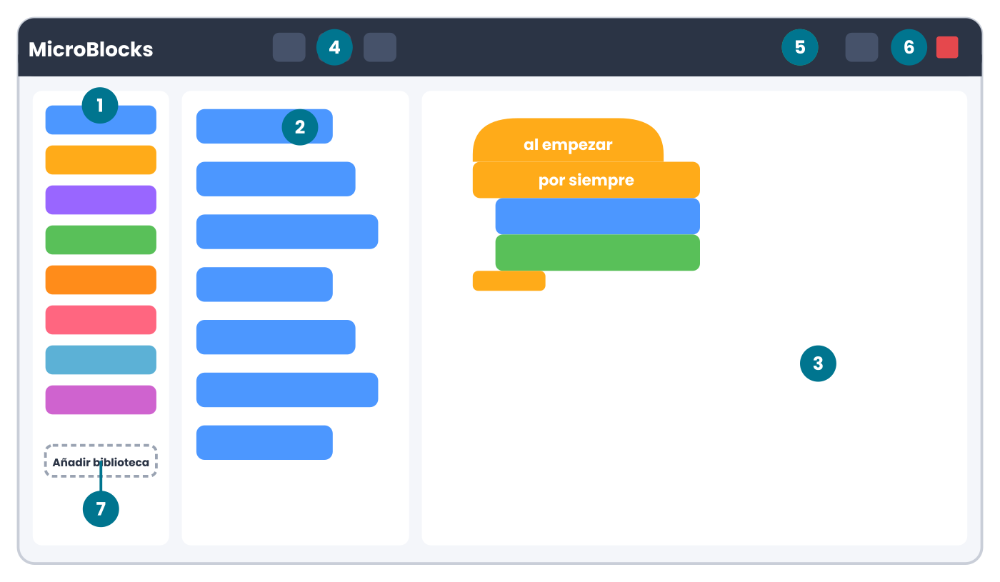

MicroBlocks
El programa con el que darás órdenes a la placa
MicroBlocks es un lenguaje de programación con bloques que encajan como un puzle, parecido a Scratch. La diferencia es que los programas no mueven un gato en la pantalla: hacen funcionar tu placa de verdad. Es gratis y funciona en español.
 Lo mejor de MicroBlocks
Lo mejor de MicroBlocks
- Funciona en vivo: haces clic en un bloque y la placa lo hace al momento.
- Se queda guardado en la placa: desconectas el cable, pones pilas y tu invento sigue funcionando.
- Hace varias cosas a la vez: puedes tener varios programas funcionando al mismo tiempo.
Paso a paso: prepara MicroBlocks
- Abre MicroBlocks. Entra en microblocks.fun con Chrome o Edge y pulsa Run, o usa la aplicación instalada en el ordenador.
- Ponlo en español. Pulsa el icono del globo y elige Español.
- Conecta la placa al ordenador con el cable USB.
- Conéctate desde MicroBlocks. Pulsa el botón del enchufe y elige tu placa en la lista. Cuando aparece un círculo verde, ya estáis conectados.
- Añade la librería del kit. Pulsa Añadir biblioteca, abre la carpeta Kits y placas y elige KidsIOT Engineering. Aparecerán bloques nuevos para los módulos del kit.
 Para el docente: la primera vez
Para el docente: la primera vez
Antes de usarla con MicroBlocks, la placa necesita su programa base (firmware). Se instala desde el propio MicroBlocks: menú MicroBlocks (rueda dentada) → actualizar firmware de la placa. Después hay que desconectar y volver a conectar el USB: si en la pantalla de la placa aparecen 3 letras, el firmware está bien instalado, y esas letras identifican la placa al conectarse. Si la placa se usó antes con otro programa (ArduinoBlocks, STEAMakersblocks…) y falla, usa la opción borra y reparticiona el firmware en placa ESP. Tarda menos de un minuto y no hay que cambiar de pestaña mientras se instala. Solo hay que hacerlo una vez por placa; conviene dejarlas preparadas antes de la sesión. Los nombres exactos de los menús pueden variar un poco según la versión de MicroBlocks.
Las partes de la pantalla

| Parte | ¿Para qué sirve? | |
|---|---|---|
| 1 | Categorías | Los bloques están ordenados por colores: control, salida, entrada, operadores… |
| 2 | Paleta de bloques | Los bloques de la categoría que has elegido. De aquí los arrastras. |
| 3 | Zona de programación | Aquí sueltas los bloques y los encajas para hacer tu programa. |
| 4 | Menús | Idioma , menú MicroBlocks y Archivo (Nuevo, Abre, Guarda). |
| 5 | Conexión | En verde: la placa está conectada. |
| 6 | Inicio y STOP | ▶ Inicio pone en marcha todos los programas. ■ STOP los para. |
| 7 | Añadir biblioteca | Añade bloques especiales, como los del kit KidsIOT Engineering. |
Tres ideas para empezar
| Idea | Qué significa |
|---|---|
| Haz clic para probar | Haz clic en cualquier bloque o programa y la placa lo hará en ese momento. Mientras se ejecuta, el programa brilla. |
| «al empezar» | Los bloques que pongas debajo se ejecutan solos cada vez que la placa se enciende. |
| «por siempre» | Repite lo que tiene dentro una y otra vez, sin parar. |
Tu primer experimento
- Ve a la categoría Salida y arrastra el bloque decir a la zona de programación.
- Escribe tu nombre dentro del bloque.
- Haz clic en él. ¿Qué aparece en la pantalla del ordenador?
En Comenzamos harás que tu nombre aparezca en la pantalla de la placa.
 Truco para compartir programas
Truco para compartir programas
Haz clic derecho en la zona de programación y elige guarda una imagen de todos los programas visibles. Esa imagen lleva el programa dentro: si la arrastras a MicroBlocks, el programa aparece listo para usar.
 Guarda tu trabajo
Guarda tu trabajo
El programa se queda en la placa, pero si quieres conservarlo para otro día, guárdalo también en el ordenador desde el menú de archivo.